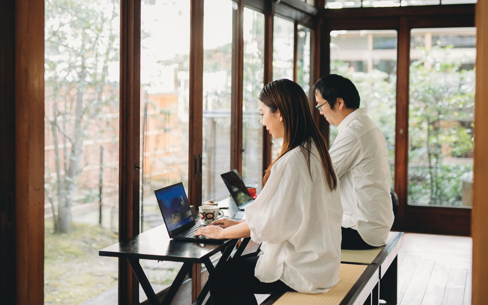
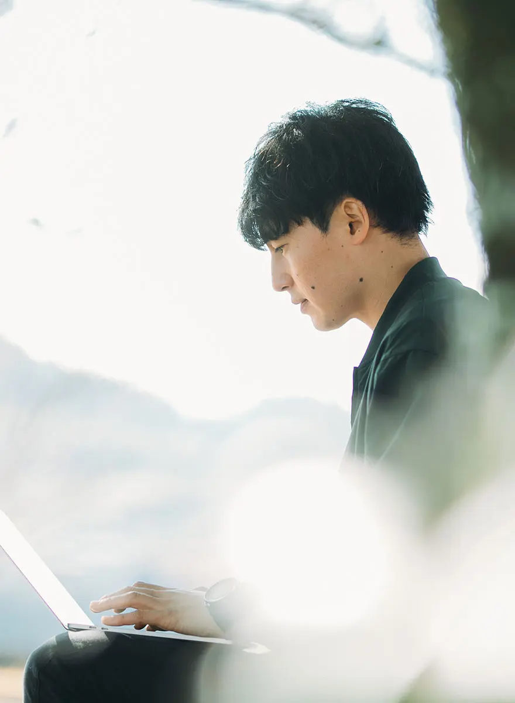
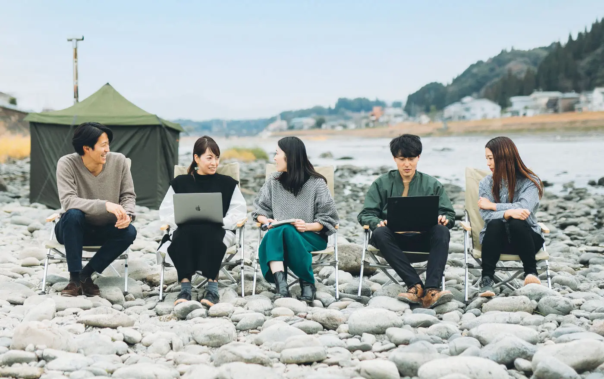
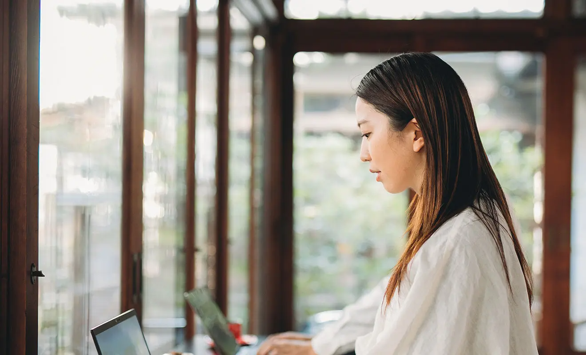

人吉球磨ワーケーション
WORK+働く環境
“好きな場所と働き方”

リモートワーク
大きな木の下で
+01
人吉球磨ワーケーションのワークスペースとなる拠点が、「くまりば」内にある「osotoHitoyoshi」。球磨川沿いにある環境 が整った施設です。外に出ると大きなシンボルツリー、ギンモクセイ。ここまでWi-Fiが届くので、木の下でリモート会議だってできちゃいます。

河原に机を並べて
ワーク、ワーク！
+02
天気がいい、ちょっとあたたかい日であれば、河川敷に机を並べて仕事することも!
川のせせらぎや、木々のそよぎをBGMに、人吉球磨の自然を感じるふだんと違った環境での仕事は、気分が変わってビッグアイデアが生まれるかも。

とっておきのスポットを
ワークスペースに
+03
気分を変える、環境を変えるのは、仕事にもいい影響与えるもの。人吉球磨のワーケーションは、仕事する環境にもこだわりアリ。例えば古民家を改装したとっておきのスポットでの仕事など、特別な提案ができたりします。